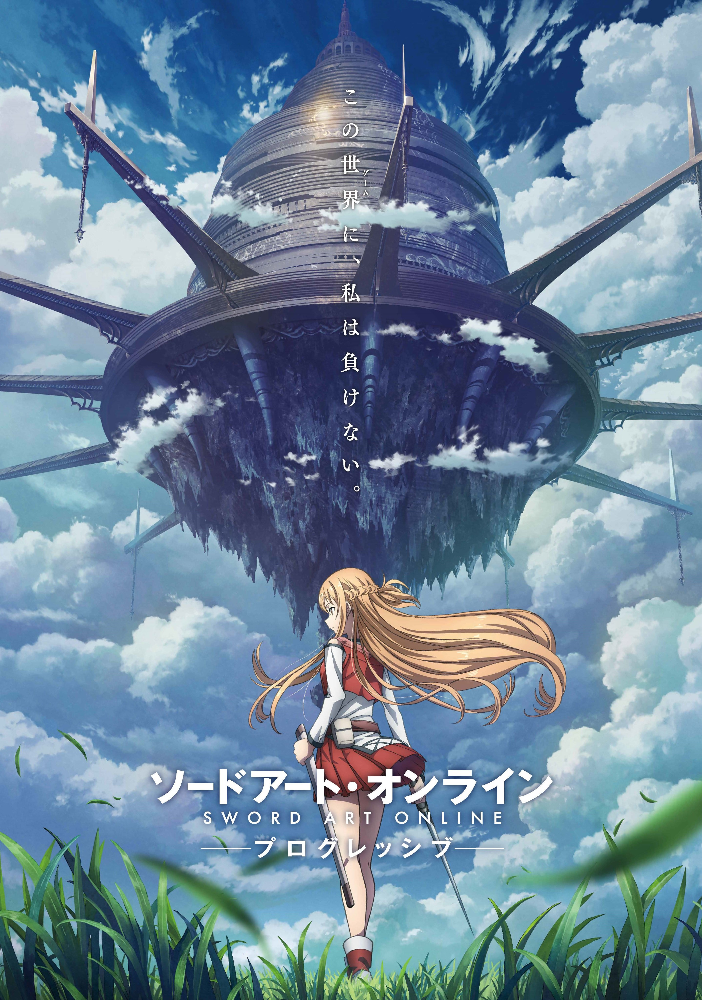
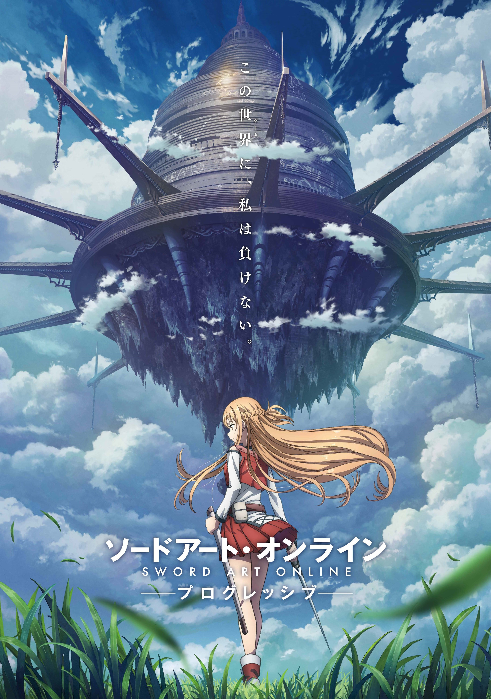

Released: March 30, 2021 Genre: Fantasy/Drama Runtime: 2h 20m
While writing other people's emotions, she may have neglected her own. Violet Evergarden, the child soldier turned Auto Memory Doll, writes letters that evoke the words her clients can't. But when a terminally ill boy requests her services for her family, her own feelings about love and loss resurface. Now she must confront her past and the death of the Major.
Released: June 18,2020 Genre:Fantasy/Romance Runtime: 1h 44m
Miyo Sasaki is in love with her classmate Kento Hinode and tries repeatedly to get Kento's attention by transforming into a cat, but at some point, the boundary between herself and the cat becomes ambiguous.
Released: February 24,2018 Genre: Fantasy/Adventure Runtime: 1h 55m
Maquia, a teenager, belongs to the Iorph community whose members can live for hundreds of years. But her life changes when the Iorph settlement is invaded and she comes across an orphan.
Released: August 14,2009 Genre: Fantasy/Adventure Runtime: 1h 40m
During a forbidden excursion to see the surface world, a goldfish princess encounters a human boy named Sosuke, who gives her the name Ponyo. Ponyo longs to become human, and as her friendship with Sosuke grows, she becomes more humanlike. Ponyo's father brings her back to their ocean kingdom, but so strong is Ponyo's wish to live on the surface that she breaks free, and in the process, spills a collection of magical elixirs that endanger Sosuke's village.

Released: September 20,2002 Genre: Fantasy/Adventure Runtime: 2h 5m
10-year-old Chihiro (Daveigh Chase) moves with her parents to a new home in the Japanese countryside. After taking a wrong turn down a wooded path, Chihiro and her parents discover an amusement park with a stall containing an assortment of food. To her surprise, Chihiro's parents begin eating and then transform into pigs. In this supernatural realm, Chihiro encounters a host of characters and endures labor in a bathhouse for spirits, awaiting a reunion with her parents.

Released: September 27,2013 Genre: Fantasy/Drama Runtime: 1h 57m
Wolf Children is a staggeringly beautiful animated feature film from director Mamoru Hosoda (Summer Wars). This epic cinematic achievement follows Hana, a woman who falls in love with a Wolf Man and gives birth to two half human, half wolf children. After the tragic death of her beloved, Hana seeks refuge in rural town where she attempts to build a life for herself -- and her children.

 
